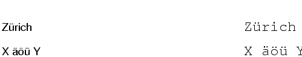

| PyChart |
| PyChart |
Starting from version 1.39, PyChart can display single-byte Unicode
characters (that is, code point below 256), such as European umlaut
and accent characters. It still does not support composite
fonts, including Chinese, Japanese, and Korean (volunteer
contributions welcome!!). To display a Unicode text, pass a Python's
unicode string to the text-drawing functions, such as
canvas.show. Below is an example.

Unicode example
Below is the source code that produces the above chart. ../demos/unicodetest.py
# -*- coding: utf-8 -*- from pychart import * can = canvas.default_canvas() x, y = (100, 500) def show_text(str): global x, y can.show(x, y, str) can.show(x + 200, y, "/12/C" + font.quotemeta(str)) y -= 20 show_text(unicode('Zürich', 'utf-8')) show_text(unicode('X äöü Y', 'utf-8'))
| PyChart |